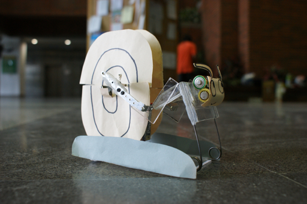

Edward Triple Jump Machine
說明：三級跳遠是奧運田徑項目之一，選手必須在起跳線後三步入沙坑，並量跳點至入坑點之最短距離為成績。本設計專題主旨得自於三級跳遠概念，設計一可連續跳躍之機具。英國選手強納森愛德華為目前男子三級跳世界紀錄保持人，故名之。
規則：所設計之跳遠機的第一跳處即為起跳點，必須在一分鐘之內完成連續三個跳躍，每次跳躍時跳遠機必須完全離開地面，第一跳起跳至第三跳落地點之最短距離為總跳躍距離。每組有三次機會，取最遠距離為比賽最終成績。
設計限制：
- 動力來源為所給定之直流馬達，不得外加其他動力
- 必須使用下列元件至少兩種：彈簧，(正，斜，傘)齒輪，螺絲(帽)，軸承，齒條，凸輪，棘輪，皮帶，鏈條，卡榫，鉚釘。
- 除直流馬達外，其餘成本不得大於新台幣一千元（含所有材料成本及黏著劑等耗材）
- 所有加工僅能使用機械工廠設備，除同組組員外，不得假手他人
成果展示
第一名：郭佑伸，林彬儀，陳怡和
第二名：程大維，洪昌甫，傅柏欽
第三名：楊昇翰，邱厚諭，倪志銘，葉家瑞
其他作品：
劉茂宏，陳彥豪，趙彥翔
廖亭雅，黃繪禎，陳家慧
吳宗翰，黃文利，龔泰宇
黃康寧，梁柏庭，葉家棟
葉蔭民，彭忠驥，陳柏均
陳家瑋，蔡迪安，何紀淳

王智宏，吳宗軒，江裕明

韋榮宇，黃瑞捷，林書正
吳建儒，趙冠緯，戴嘉佑
廖坤祈，張銘峰，吳忠翰